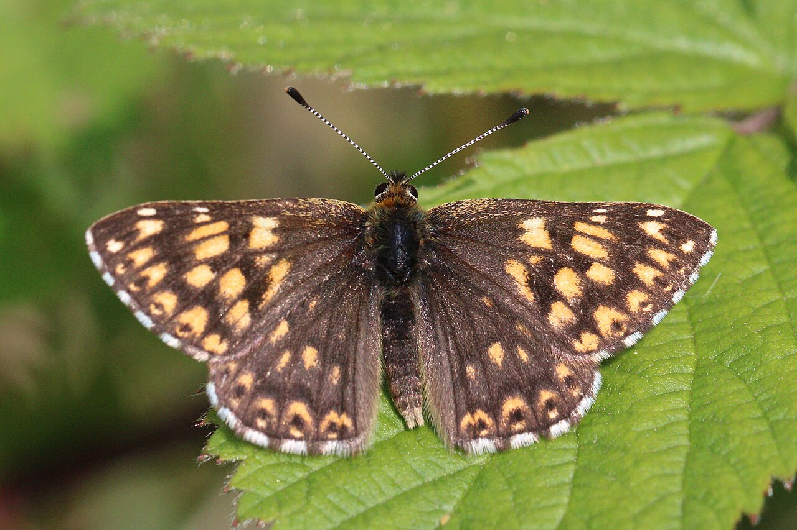
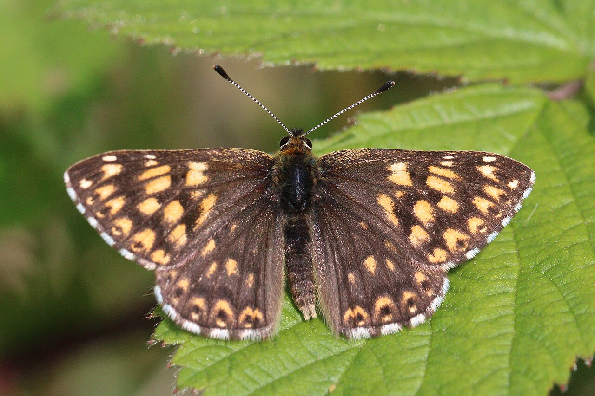
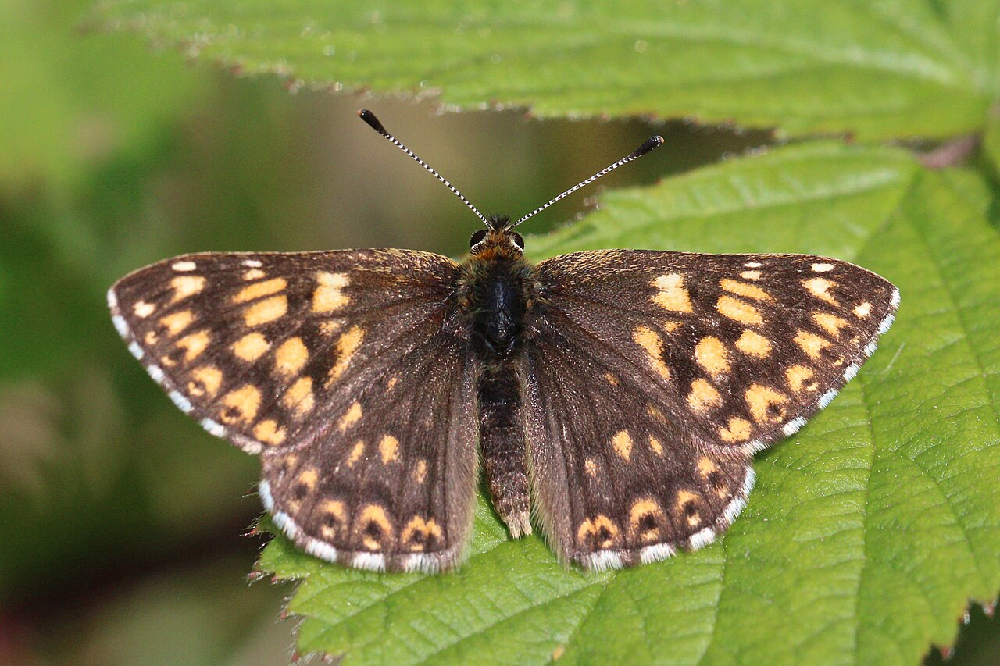

Butterflies are winged insects from the lepidopteran superfamily Papilionoidea, characterised by large, often brightly coloured wings that often fold together when at rest, and a conspicuous, fluttering flight. The oldest butterfly fossils have been dated to the Paleocene, about 56 million years ago, though molecular evidence suggests that they likely originated in the Cretaceous.
Butterflies have a four-stage life cycle, and like other holometabolous insects they undergo complete metamorphosis. Winged adults lay eggs on plant foliage on which their larvae, known as caterpillars, will feed. The caterpillars grow, sometimes very rapidly, and when fully developed, pupate in a chrysalis. When metamorphosis is complete, the pupal skin splits, the adult insect climbs out, expands its wings to dry, and flies off.
Some butterflies, especially in the tropics, have several generations in a year, while others have a single generation, and a few in cold locations may take several years to pass through their entire life cycle.
Butterflies are often polymorphic, and many species make use of camouflage, mimicry, and aposematism to evade their predators.Some, like the monarch and the painted lady, migrate over long distances. Many butterflies are attacked by parasites or parasitoids, including wasps, protozoans, flies, and other invertebrates, or are preyed upon by other organisms.
Some species are pests because in their larval stages they can damage domestic crops or trees; other species are agents of pollination of some plants. Larvae of a few butterflies (e.g., harvesters) eat harmful insects, and a few are predators of ants, while others live as mutualists in association with ants. Culturally, butterflies are a popular motif in the visual and literary arts. The Smithsonian Institution says "butterflies are certainly one of the most appealing creatures in nature"
The Oxford English Dictionary derives the word straightforwardly from Old English butorflēoge, butter-fly; similar names in Old Dutch and Old High German show that the name is ancient, but modern Dutch and German use different words (vlinder and Schmetterling) and the common name often varies substantially between otherwise closely related languages. A possible source of the name is the bright yellow male of the brimstone (Gonepteryx rhamni); another is that butterflies were on the wing in meadows during the spring and summer butter season while the grass was growing.
